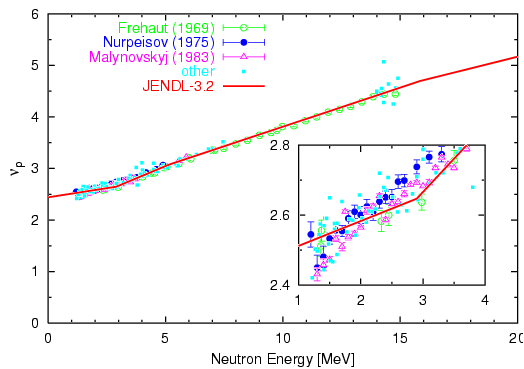

set terminal postscript eps enhanced color solid
set output "nup.eps"
set key left
set linestyle 1 lt 2 pt 6 ps 1
set linestyle 2 lt 3 pt 7 ps 1
set linestyle 3 lt 4 pt 8 ps 1
set linestyle 4 lt 5 pt 5 ps 0.5
set linestyle 5 lt 1 lw 3
set xlabel "Neutron Energy [MeV]"
set ylabel "{/Symbol n}_p"
set tmargin 1
set size 0.7,0.7
set multiplot
set origin 0.0,0.0
set xrange [ 0 : 20 ]
set yrange [ 0 : 6 ]
set xtics 5
set mxtics 5
set ytics 1
set mytics 2
plot "nup.exp" index 0:0 u 1:2:3 t "Frehaut (1969)" w yerr ls 1,\
"nup.exp" index 1:1 u 1:2:3 t "Nurpeisov (1975)" w yerr ls 2,\
"nup.exp" index 2:2 u 1:2:3 t "Malynovskyj (1983)" w yerr ls 3,\
"nup.exp" index 3:25 u 1:2 t "other" w points ls 4,\
"nup.j32" u ($1*1e-6):2 t "JENDL-3.2" w l ls 5
set origin 0.33,0.1
set size 0.35,0.35
set xrange [ 1 : 4 ]
set yrange [ 2.4 : 2.8 ]
set xtics 1
set mxtics 2
set ytics 0.2
set mytics 2
set xlabel ""
set ylabel ""
plot "nup.exp" index 0:0 u 1:2:3 not w yerr ls 1,\
"nup.exp" index 1:1 u 1:2:3 not w yerr ls 2,\
"nup.exp" index 2:2 u 1:2:3 not w yerr ls 3,\
"nup.exp" index 3:25 u 1:2 not w points ls 4,\
"nup.j32" u ($1*1e-6):2 not w l ls 5
set nomultiplot
